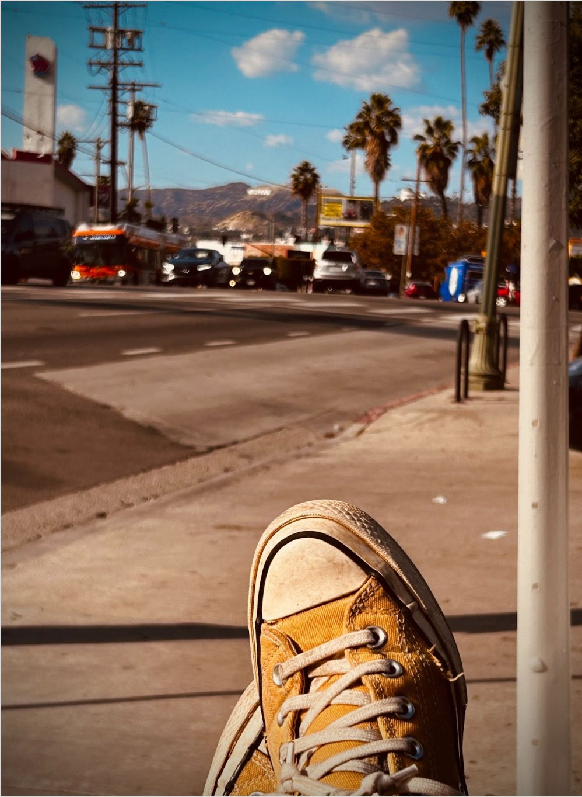
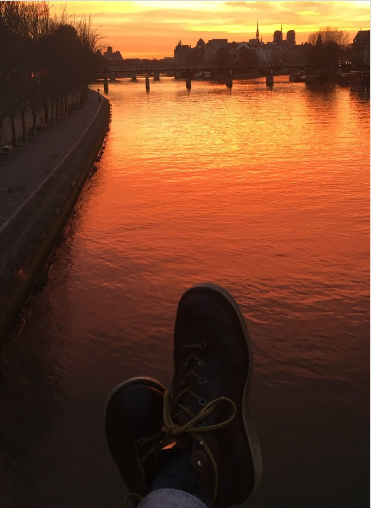
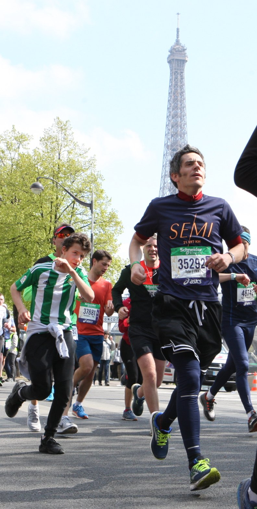

a few random stuff...
if you're thinking of joining/visiting USC or Sciences Po, check out these typical commutes:



if you're thinking of joining/visiting USC or Sciences Po, check out these typical commutes:


